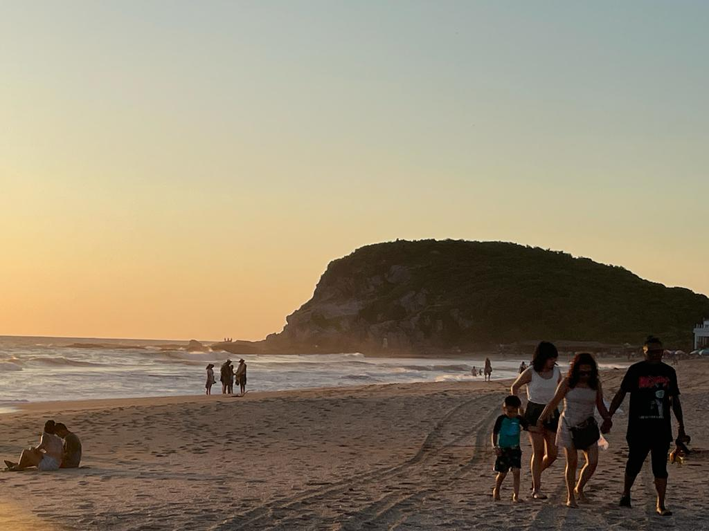

México nos ofrece un mundo lleno de contrastes. Ciudades inmensas, selvas virgenes, volcanes, playas interminables, ciudades coloniales, paisajes diversos, vida silvestre y desiertos impresionantes entre muchas cosas más. Existe mucho por conocer.
Hay ciertos ecenarios seductores para vivir aventuras en las montañas. Me gusta visitar las montañas.Me gusta visitar las montañas, ver los rios, las cascadas, la flora y fauna silvestre, pinos, cedros, encinos, los halcones que vuelan en el cielo; oír las aves que cantan, conrrer atras de algun venado u otro animalito, respirar el aire fresco y dulce
Me gusta abandonar la rutina de la ciudad y vivir la aventura de conocer México con sus hermosas playas doradas de arena que nos invitan a descansar, a nadar, a hacer locuras imprevistas. Me encanta ir a Acapulco, Cancun, Puerto Escondido a las playas de Huatulco con mis amigos
Las vacaciones pasadas me fui a Europa y al Reino Unido. Visité muchas ciudades hermosas e hicimos muchas. Visité muchas ciudades hermosas e hicimos muchas fotos digitales. Aquí le muestro mis fotos de Londres, una cintad grande sobre el no Támesis. La zona histórica de Londres está sobre la orilla norte del rio, donde también se encuentran la mayoria de las atracciones turísticas cabe destacar la Torre de Londres, la plaza Trafalgar Square y del Parlamento, la abadía de Westminster, el puente Tower Bridge, el parque Hyde Park, el palacio de Buckingham o la Catedral de San Pablo
Regresar al curriculum